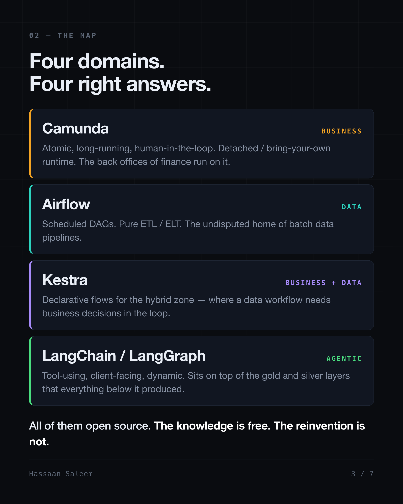
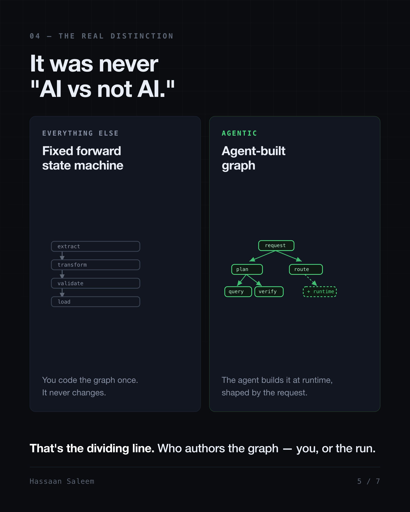
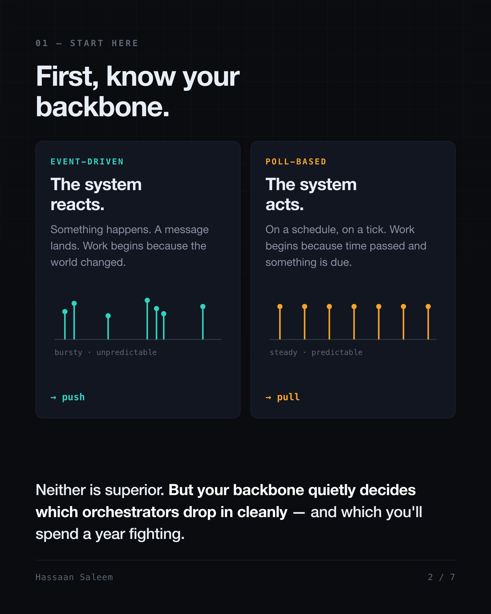
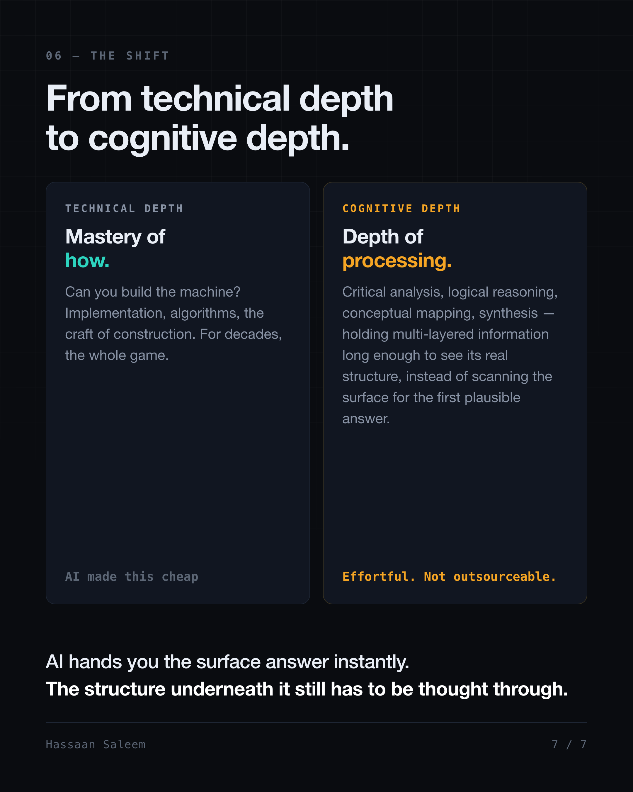

Orchestrators: Business, Data and AI
Four engines, one question nobody asks, and why "we'll just build it" got cheaper and more expensive at the same time.
The sentence that starts every bad architecture
I have heard the same sentence in more design reviews than I can count.
"We already have a queue, a worker and a retry. What's left is basically a state machine."
And the estimate attached to it is usually right. A competent team really can write that state machine in a sprint. I've nodded along in the room, done the mental math, and agreed it was a week of work. It often was.
The estimate isn't the problem. The problem is what it quietly leaves out — because a state machine is cheap to write and expensive to own, and the sprint estimate only ever prices the writing.
Orchestration is one of the most misunderstood topics in engineering. Not the hardest — the most misunderstood. I've watched two good engineers argue about tools for an hour before realising they were describing two completely different problems, and then watched them go build the engine themselves anyway, because AI made writing the code free.
Writing the code did get free. Everything that happens after the code did not.
What follows is a plain-language walk through what an orchestrator actually is, the four kinds that exist, how to tell which one your problem needs, and why the honest answer is almost always to adopt one rather than build it. No prior knowledge needed. I'll be literal about all of it.
Part 1 · What an orchestrator actually is
Strip off the marketing and it comes down to one sentence.
An orchestrator is a runtime that manages a runtime.
You have work. The work happens in steps. If you can describe your logic as a sequence of steps — call it a state machine, a graph, a checklist, whatever word you like — then an orchestrator is the thing that owns that graph and does three jobs with it.
It executes — runs the steps in the right order, in the right place. It manages — retries what failed, holds state between steps, resumes after a crash, bounds how much runs at once. And it governs — shows you what ran, what it produced, who approved it, and what happened when it broke.
That third job is the one people forget, and it's the reason orchestrators exist as products rather than as a file in your repo. Executing steps is easy. Executing steps and still being able to answer questions about a run that happened three weeks ago is not. Hold onto that, because it's the part the sprint estimate never includes.
Here is the thing that surprised me when it finally clicked: all four categories below do exactly those three jobs. They agree on almost everything. What they disagree about is narrow — and that narrow disagreement is the whole article.
Part 2 · There are four kinds, and they don't substitute
Choosing an orchestrator isn't choosing a tool. It's choosing a category. Get the category wrong and no amount of configuration digs you out.
| Category | Engine | The unit of work | The hard part |
|---|---|---|---|
| Business process | Camunda (BPMN) | one process instance | time, and people |
| Data ETL/ELT | Airflow | a dataset | blast radius |
| Business + data | Kestra | a pipeline with decisions in it | who is allowed to write one |
| Agentic | LangChain / LangGraph | a goal | the plan doesn't exist yet |
One honest note before those names carry any weight: each engine in the table is simply one I've worked with, not the only one that fits its row. There are many alternatives in every category — Temporal, Prefect, Dagster, n8n and CrewAI among them — and I'm naming specific tools only to make each category concrete, not to recommend one over its rivals.
Before any of those names mean anything, I want to hand you three pictures, because they carry all the way down and they're easier to remember than the table.
Data work is a conveyor belt. Same stations, same order, every single night. When there's more to process you make the belt wider — but the stations don't move and the order doesn't change.
Business process is a case file. It moves from desk to desk, and sometimes it just sits in someone's inbox over a long weekend, waiting for a person who isn't in yet.
Agentic work is a detective. There's no case plan on day one. What comes back from the third interview is what decides whether there's a fourth one at all.
Note those three, because the mismatch runs both ways. Put a detective on a conveyor belt and the process is no longer deterministic — he stops to reason out every item that comes past, when a belt only works if every item gets treated the same. Once you've seen the shapes, you'll notice that most orchestration arguments are exactly that mistake, dressed up as a preference between tools.

Part 3 · Business process — the case file
The unit of work here is one process. One refund. One onboarding. One insurance claim.
And the hard part isn't compute. It's time, and people.
There's one question that identifies this category cleanly: does a run suspend in the middle, wait on a human for three days, and then pick up exactly where it left off? If yes, you're here.
One thing that looks identical and isn't: an agent that drafts a plan and pauses for you to approve it. That waits on a human too — but there the human is signing off on a plan the run just invented, while here they approve a step that was drawn into the process long before the run started. Remove the human from both and the difference shows: the business process still has a graph you can read in advance, and the agent still has to go invent one. Same pause, opposite authorship.
Picture the refund approval sitting in someone's inbox over that long weekend. Nothing is running. Nothing has crashed. The process is simply paused, halfway through, with real-world side effects already committed — money moved, an email sent, a record changed at a partner you don't control. That's the failure mode that defines the category: not a crash, but a process stranded halfway with consequences already out the door.
Which changes how you think about failure. You do not retry a refund you already issued — you reverse it. BPMN, the modelling language Camunda runs on, has this built in as a first-class idea: compensation, not retry. It's there because the people who designed BPMN were modelling banks and insurers, not batch jobs. When a step can't just be run again, the graph needs a way to undo the steps that already happened, and that has to be part of the language, not something you bolt on later.
Camunda adds one more choice that matters enormously in regulated work: you decide where the engine itself lives. Run it as a shared remote cluster, self-manage it inside your own boundary so the process state never leaves your walls, or do both at once — a managed control plane with the task execution pinned in your environment, which Zeebe, its underlying engine, supports through custom runtimes for the specific tasks that have to run on your side of the line. That sounds like a footnote until you're in a room where a process is legally required to be auditable and a human signature is a genuine node in the graph. Then it's the whole reason the tool is on the shortlist — and it's why Camunda's public case studies read like a roster of banks, insurers, telcos and government bodies.
The tell here is easy to catch. If someone describing the flow says "and then it waits for approval," and that wait can last days, and a human is the reason — you're in business process. Stop shopping in the data aisle.
Part 4 · Data — the conveyor belt
The unit of work is a dataset. And the hard part is blast radius: one bad input must not take down the other forty.
This is the category everyone already knows, because it's the one with a default answer — Airflow, usually sitting next to a model registry for the ML side and dbt or stored procedures for the transformations. But run enough of it in production and you learn that you weren't really paying for the scheduler. You were paying for three primitives that only reveal their worth on a bad night.
The first is dynamic task mapping. One task declaration fans out at run time into one task per tenant. A single tenant ships a malformed payload, that one tenant's task fails, and every other tenant finishes clean. Write it yourself as a loop instead, and the loop dies on the first bad row and takes the good rows down with it.
The second is watermarks and checkpointing — incremental jobs recording how far they got. This one earns its keep exactly once: the night a nine-hour backfill dies at hour eight. On that night it is worth more than every feature above it combined, and every other night you forget it's there.
The third is pools — a pool is just a semaphore with a name. Give heavy rendering its own pool and a model-training job with a day-long timeout can never starve the ingestion lane. Two workloads, one cluster, no negotiation between them.
Look at those three together and you can name what they actually are: containment. Isolate failure, checkpoint progress, bound concurrency. None of it is clever code. It's the accumulated shape of things that went wrong once, to somebody else, years ago, and got fixed upstream so you'd never have to have that outage yourself. That's the real product.
There's a second rule this category teaches, usually late and usually the hard way: push the compute down. If the data is too big to sit comfortably in process memory, the orchestrator has no business holding it. Move the logic to where the data already lives — dbt models, stored procedures, warehouse SQL — and let the orchestrator move pointers instead of payloads.
So when you adopt something like Airflow, you're not really buying features. You're buying other people's outages, already survived.
Part 5 · Business plus data — the belt with a stamp in the middle
Then there's the awkward middle, and it turns out to be more common than either pure case: pipelines that are mostly data movement but have real business decisions wired through them. Not clean ETL. Not a clean approval flow. Something in between that neither aisle quite fits.
Kestra is built for that seam, and its real differentiator isn't a feature you can point at on a comparison table — it's authorship. The flows are declarative YAML, which means the person who understands the business rule can write the flow without also being the person who understands the runtime. That sounds small. It's the whole thing. It's the difference between the analyst waiting two sprints for an engineer and the analyst shipping the flow herself on a Tuesday.
The pipelines in this category tend to keep one signature shape, and once you see it you see it everywhere:
Data in. An agent in the middle. A process out the other side.
Let me put that shape on a concrete job. Take a retailer selling across three marketplaces. Every night, new customer reviews pile up across all three.
The first stretch of the flow is pure data work — pull the new reviews from each marketplace, match each one to the product it belongs to, line them all up. Plain tasks, no intelligence involved. Fetching and matching is transport, and transport doesn't need judgment.
Then the agent takes its turn, and it gets exactly one job: read each review and decide what it's actually saying. "The zipper broke in a week" is a defect. "Runs small, order a size up" is a sizing issue. "Arrived late" is a delivery complaint — about the courier, not the product. Telling those three apart is genuine judgment, the one step in the whole flow that code can't do reliably. So that's the step the model gets, and it's the only step the model gets. Models for judgment, never for transport.
Everything after that decision is process, and process runs on business rules, not on model output. Defect reports open a case with the supplier. Sizing complaints — once enough of them agree — update the product page. Delivery complaints route to logistics, not to the product team. And a product a category manager has flagged for manual handling skips the automation entirely, no matter what the model concluded about it.
And notice who owns those rules. "Once enough of them agree" is a number someone has to choose — five reviews, or eight — and the person who should choose it is the category manager, not an engineer. Thresholds move, categories get added, routing changes; these are business decisions, tuned constantly by the people who own the outcome. That is the real reason the awkward middle resists a pure-code tool. Write this as an Airflow DAG and every one of those parameters lives in Python — and an AI writing that DAG for you doesn't change it, because the parameters still sit in code a subject-matter expert can't reach or test. So each tweak becomes a developer ticket and a deploy, and the person who actually understands the decision can't even try a change on their own. The hybrid tools earn their place by handing that person a gateway to the decision instead of gatekeeping it behind code.
The run fans out over the products a few at a time, each one allowed to fail on its own — one marketplace's API going down at midnight must not strand the other two. And notice that the agent's verdict is treated as a proposal, never as an action. The flow decides what happens. The agent only decides what's true.
The tell here: the flow has a model call, a database write and a decision step all living together, and nobody in the org can quite decide which team owns it. That's not a problem with the flow. That is the category.
Part 6 · Agentic — the detective
Now the category that breaks the pattern the other three share.
In the first three, a human wrote the graph before the run ever started. Here, the graph is an output of the run, not an input to it. Nobody drew it in advance because nobody could — the shape of the work only becomes knowable once the work is underway.
The typical build looks reasonable enough on paper. A stage that validates and classifies the incoming request. A stage that plans a task graph. A stage that assigns a model or a specialist agent to each task. Then execute, respond, validate. Each of those stage handlers is a composed chain — a prompt template piped into a model call.
The interesting part is what happens next. The graph the planner produced gets topologically sorted into dependency batches and run concurrently under a bounded semaphore, with a factory routing each task to whichever specialist fits — a data analyst, a web researcher with search and scraper tools, a conversational agent, or sometimes just a straight read against an API. State checkpoints after every stage so a session can resume from the middle. And the state trees are recursive, because one analysis is allowed to spawn child analyses of its own.
Read that list back, because it's the actual lesson of this whole part: none of it is a feature you were handed. Checkpointing, the concurrency bound, resume semantics, per-task isolation — in Parts 4 and 5 every one of those came in the box. Here you write all of them yourself. The moment the topology stopped being knowable in advance, every guarantee that quietly depended on knowing the topology had to be rebuilt by hand. That's the real price of admission — not the model calls, which are the easy part, but the plumbing you stop getting for free.
One clarification, because it wastes a lot of people's time in exactly this spot: LCEL — the LangChain composition syntax — is a composition library. It composes handlers. A system can use it for every single stage and still need a separate runtime to sequence those stages, checkpoint them, and recover them when they break. Comparing a composition library to an orchestrator is comparing a function-call convention to a scheduler. They're not the same layer, and conflating them is how people end up convinced they've already got an orchestrator when what they've got is a nicer way to write functions.
Part 7 · The two questions that sort the whole field
Before any tool shortlist, two questions do the real sorting. Neither of them appears on a comparison table, which is a large part of why comparison tables lead people astray.
The first: who writes the graph? Declared means a human wrote the topology before the run started. Generated means something produced the topology during the run. Camunda, Airflow and Kestra all sit on the declared side, and that one shared property matters more than every feature they don't share.
Dynamic fan-out looks like the counterexample, and it isn't. Fanning out changes how wide the graph is, never what shape it is — three tenants or three hundred, it's the same nodes and the same edges, just more copies of them. Even LangGraph at its most capable — conditional edges, runtime fan-out, checkpointed resume — never lets a planner invent a node that wasn't declared somewhere. The moment you compile a fresh graph mid-run from intermediate results, you have become the planner, and every guarantee past that boundary is yours to write.
That declared constraint isn't bookkeeping. It's the thing that lets you reason about failure at all. You can point at a node and say what happens when it dies, precisely because the node existed before the run did. Alerting, ownership, runbooks — all of it quietly assumes a graph you can read while nothing is running. Take that assumption away and you don't just lose a diagram; you lose the ability to answer "what breaks if this step fails" before it fails.
And notice the line is about authorship, not about AI. A flow that is fully LLM-powered but fixed in YAML is declared. A solver with no AI in it anywhere that emits fresh graphs is generated. It was never AI-versus-not-AI. It was always who-holds-the-pen.

The second: how does work start? Event-driven, because something happened. Or poll-based, because a clock ticked, or a loop went looking and found something waiting. Neither is better than the other — but an orchestrator is, at its core, an opinion about when work starts, and that opinion has to match the system it lands in.
Force a scheduled DAG engine onto a reactive system and you'll spend your life writing sensors — tasks whose entire job is to sit and wait for something that already announced itself the moment it happened. Force a reactive engine onto batch ETL and you'll find yourself manufacturing fake events just to trigger work that a single cron line would have started for free. Neither is a bug in the tool. Both are a mismatch between the tool's opinion and the system's reality. The two backbones can even bridge on purpose — the app writes a row, the engine polls and claims it — trading a little latency for a queue you can inspect and replay. But you want to bridge them deliberately, not discover halfway through that you accidentally married a poller to an event stream.

Roughly half the orchestrator disagreements I've sat through were two people describing different backbones and sincerely believing they were arguing about tools.
Part 8 · "We'll just build it"
Now back to the sentence this whole thing opened with, because both of those questions are exactly what it skips over.
The build case sounds most reasonable in event-driven microservices, where half the machinery already exists — a broker, some consumers, retries — and what's left really does look like "just" a state machine. And the sprint estimate for that state machine is usually right. But build cost was never the expensive part; maintenance, scalability and reliability are, and the estimate prices the week of writing while silently omitting the next three years of owning. AI hasn't changed that math one bit — it writes the code faster than ever, but it does not carry the pager at 3am when the thing you built wedges itself.
I've watched this fail from both ends. On one end, an entire product built inside a low-code automation tool that hit a wall the day it needed a real test suite and couldn't grow past it. On the other, hand-rolled microservices that quietly rebuilt retries, scheduling and state management four separate times — badly, slightly differently each time — across four services that nobody realised were solving the same problem. Opposite mistakes, identical root: both skipped the one question that sorts it. Does this problem already have a mature engine, and what would adopting it actually cost?
So here's the bar I've landed on. Assume adopt. Make build clear the bar. And building clears it for exactly one kind of thing — a combination of capabilities you genuinely cannot get without rebuilding around someone else's state model. Something like a topology generated mid-run from intermediate results and recursive, resumable state where one unit of work spawns children of its own. Either of those alone you can buy off the shelf. Only both together, tangled up in each other, clear the bar — and even then you should be nervous.
The test is never "is this tool any good." Plenty of genuinely well-built frameworks solve no problem your system actually has, and adopting one of those is a rewrite with nothing in the numerator — cost, no benefit. The real question is narrower and less flattering: does this tool solve a problem this system actually has? Asked periodically, in both directions — of the things you've already built, too, not just the things you're tempted to build next.
One honest caveat, because the argument cuts both ways: adopting isn't free either. A mature engine is a dependency with its own operational surface and a state model you now have to live inside. I've seen teams drown in an orchestrator they adopted for four nightly jobs that a cron line would have run untouched for a decade. The default is adopt. But the smallest honest answer is sometimes neither — no engine, no framework, just the cron line and a clear conscience.
Step back, though, because the pattern is bigger than scheduling. There are two kinds of depth, and the sentence we started with confuses them. Technical depth is mastery of how — the implementation, the algorithms, the craft of construction. For decades that was the whole game, and it's exactly what AI made abundant and cheap. Cognitive depth is a different faculty: the capacity to hold a complex, multi-layered problem in your head and actually process it — critical analysis, logical reasoning, conceptual mapping, synthesis — instead of surface-scanning until something plausible surfaces. It takes conscious mental effort, and that effort is what makes it depth.
"What's left is just a state machine" is surface scanning: pattern-matching on the parts in front of you and stopping the moment something clicks. Recognising that the thing you're about to write is structurally the same problem four mature engines already solved, that the cost lands in year three rather than sprint two, and that the backbone quietly disqualified half your options before anyone opened a comparison table — that's conceptual mapping, and no model does it on your behalf. Not because the models can't, but because no model is sitting in the room holding your constraints, your regulators, your on-call rotation and your year-three headcount all at once. You are.

Every engine named in this article is open source — free, documented, and battle-tested by people whose outages you will never have to live through. The knowledge is free. Only the reinvention is expensive. Most build-versus-adopt calls go wrong long before anyone compares anything, because nobody in the room knew what already existed — and nobody thought one layer past the first answer that sounded right.
The short version
If you read nothing else:
- An orchestrator is a runtime that manages a runtime. It executes steps, manages state and failure, and governs what happened — and the third job is the one you can't cheaply build yourself.
- There are four kinds, and they don't substitute. Business process, data, business-plus-data, agentic. Get the category wrong and configuration won't save you.
- Business process is a case file. The hard part is time and people; a run can pause for days, and you compensate for failures instead of retrying them.
- Data is a conveyor belt. The hard part is blast radius; what you're really buying is containment, and when the data gets big you push the compute down to where it lives.
- The awkward middle is data in, an agent in the middle, a process out. Models for judgment, never for transport — the flow decides what happens, the agent only decides what's true.
- Agentic work is a detective. The graph is an output of the run, not an input, and every guarantee that depended on knowing the graph in advance you now write by hand.
- Two questions sort the whole field before any tool does. Who writes the graph — declared or generated — and how does work start — event or poll. Both about authorship and timing, neither about AI.
- Assume adopt; make build clear the bar. AI writes the code for free but doesn't carry the pager. The knowledge is free — only the reinvention is expensive.